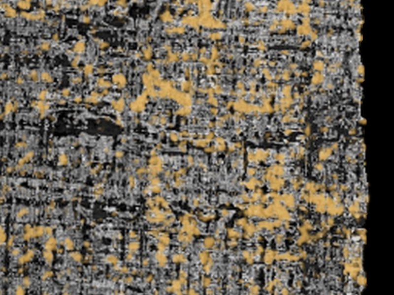

PHerc. 172 · Bodleian Library, Oxford
On Vices, Book 1
This Oxford scroll is similar in size to the famous Grand Prize scroll. The team has recovered its title — Philodemus, On Vices, Book 1 — and virtually unrolled most of it. Zoom in and look for rows of marks the way a reader would.

4 pieces to explore
A busy page of On Vices
One of the most marked wraps from Philodemus, On Vices, Book 1.
Explore →
Another wrap from Book 1
A neighbouring stretch of the same Oxford scroll.
Explore →
A close neighbour
A wrap that sits close to the busiest page.
Explore →
A wide stretch
A broader wrap, with plenty of room to explore.
Explore →